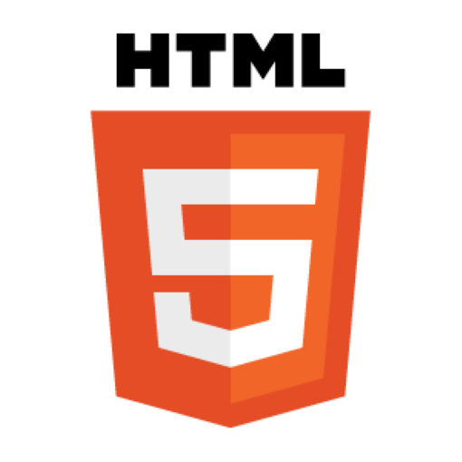

Mis Proyectos
Aquí podras ver algunos de los proyectos en los que he trabajado tanto de forma autonoma, y en mi proceso de formación profesional
Proyectos personales



Web propio
- Este repositorio contiene mi página web personal, donde logre aplicar algunos de los conceptos aprendidos en clases y por eso sirvio como ejercicio para mejorar mis habilidades en desarrollo web.
Practica de patrones de diseño
- Este repositorio, contiene un codigo en el cual aplique 4 patrones de diseño en JAVA (adapter, bridge, singleton, prototype).
Ejercicio Final curso básico Python
- Este repositorio contiene el ejercicio final que tuve que realizar en un curso basico de Python, el cual me ayudo a entender de mucho mejor manera el uso de diferentes funciónes. Mi tarea era escribir un simple programa que simule jugar a tic-tac-toe (nombre en inglés) con el usuario.
curso html (aplicando lo aprendido)
- Este repositorio contiene uno de los ejercicios que tuve en mi curso "Introducción al desarrollo WEB", en el cual tuve que aplicar todo lo aprendido en el curso introductorio (simule una tienda de venta de figuras).
Space Invaders ST
- Este repositorio contiene mi versión del famosísimo juego Space Invaders, en la que implementé diferentes niveles de dificultad y efectos visuales de explosiones al colisionar las balas con los enemigos.
Programación WEB


Unidad 1
(algunos proyectos se me perdieron con el pendrive, como el de la biblioteca finiquitado posteriormente)
semana 5 - N-tek (techsoluciones)
- Este repositorio contiene la actividad de la semana 5 de programación web, sin embargo no logre implementar el login aunque si pude realizar el contacto gracias a formsubmit, el proyecto se llama N-tek y esta enfocado en la innovación tecnologica.
Entrega Progreso Programación web Unidad 1
- Este repositorio contiene mi página web correspondiente a la actividad de la semana 3 de la Unidad 1. En esta actividad, la interfaz está diseñada para representar un aula virtual hipotética de "Educonecta
actividad bonus repaso pp1
- Este repositorio contiene la actividad "Actividad Bonus Repaso PP1", en la que nos enfocamos en practicar el uso de un contenedor genérico como div, con el objetivo de crear tarjetas que simulan el perfil de un trabajador.
Unidad 2
Tarea Lunes 21 04
- Esta actividad estuvo pensada para ayudarme a practicar cómo hacer consultas a una base de datos llamada "Sqlite". Cada ejercicio está explicado paso a paso, con ejemplos y una breve explicación para que asi, pueda entender cada consulta.
Evaluacion N°2
- Esta evaluación, consto con 3 partes, la parte 1 es un documento escrito en el cual se deben resolver algunas necesidades, identificando requerimientos y pensando en la implementación futuras.
- Este repositorio contiene la Parte 2 de la 'Evaluación N.º 2', correspondiente a un avance del que posteriormente fue el Proyecto Final (Parte 3). En esta etapa se trabajó con el caso 'Sistema Seguro de Gestión Clínica para la Institución Médica Vitalis', donde debían implementarse ciertos requerimientos específicos.
- Este repositorio contiene la Parte 3 de la 'Evaluación N.º 2', correspondiente a la entrega de la version final del proyecto del caso de: 'Sistema Seguro de Gestión Clínica para la Institución Médica Vitalis'.
Descargar informe 👉
GitHub 👉
Evaluación final unidad 2
- Esta evaluacion consto de un avance y la entrega final del proyecto, el cual tuvo que ser prensentado frente al profesor.
- Este repositorio contiene el avance de la Evaluación Final de la Unidad 2, en el que se logró implementar principalmente la estructura, aunque aún queda mucha implementación por realizar.
- Este repositorio contiene mi página web, la cual fue realizada como parte de la evaluación final de la Unidad 2 de la asignatura "Programación Web". Representó un gran esfuerzo por parte de nuestro grupo de trabajo (Benjamin, Kameron y yo), y aunque no todos los requerimientos fueron implementados, la mayoría sí lo fueron.